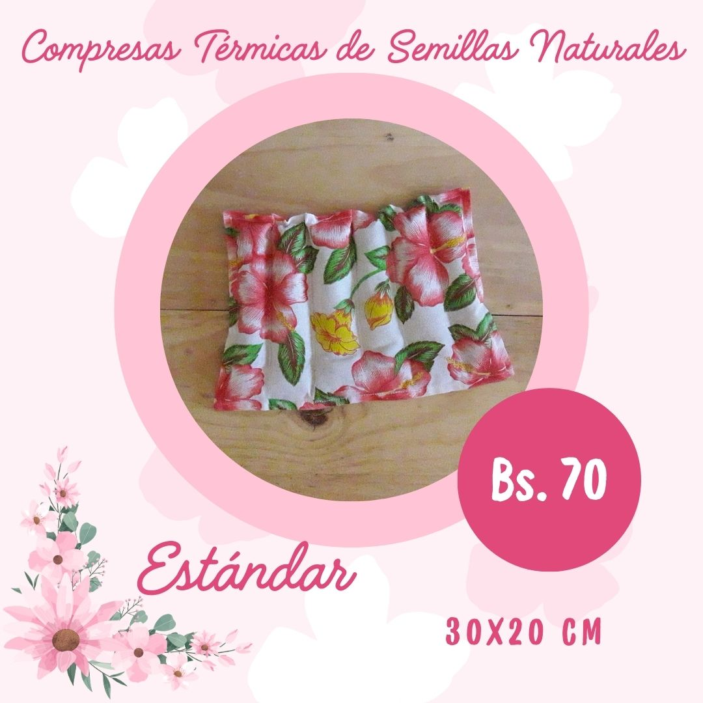

Michi Bits — Compresas térmicas reutilizables
Alivio natural y cómodo para tu familia. Uso en caliente o frío — ideales para cólicos, dolores musculares y bienestar diario.

Catálogo
Elige tu compresa — después toca el botón para pedir por WhatsApp.
Tipos de compresas
- Estándar multiuso
- Larga envolvente
- Cuellera
- Cuello-hombros-espalda alta
- Anticólico
- Lumbar
- Rodilla con cordones
- Antifaz antimigraña
- Set mamá-bebé
- Calentador de manos
- Anticólico forma corazón
- Para bebé / para niño
- Multiuso deporte
- Cervical
Cómo usar
- Calor: calienta 45-60 segundos en microondas (según tamaño).
- Frío: coloca en congelador por 30-60 minutos.
- Revisar temperatura antes de aplicar.
- Lavar a mano o ciclo delicado.
Beneficios
Natural y seguro
Sin químicos, reutilizables.
Versátil
Caliente o frío para múltiples dolencias.
Diseños para regalar
Modelos especiales para ocasiones.
Quienes somos
Michi Bits nace para ofrecer soluciones naturales y reutilizables para el bienestar familiar.
Preguntas frecuentes
¿Pueden usarse en bebés?
Sí, con supervisión.
¿Cómo se calientan?
En microondas 30–60 segundos.
¿Hacen envíos?
La Paz, Cochabamba y Santa Cruz.